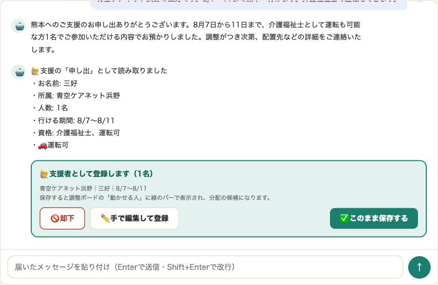
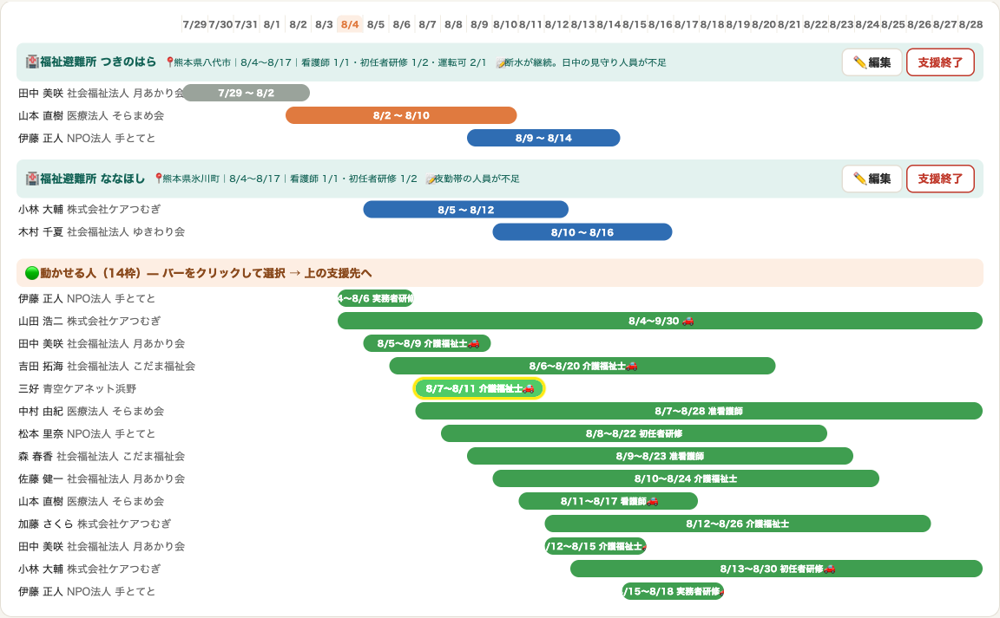

各施設への割り振りは「DMAT」が行うものです。本「調整ボード」は、その結果を反映し、活動記録を残すためのものです。当日に割り振りが確定します。未来の予定に関しては、切れ目なく支援者を確保するために仮で表記されているものです。
📅 期間で絞り込み
〜
データを読み込んでいます…
表示は2週間ずつ（◀▶で移動・「期間で絞り込み」で任意範囲）｜1日 = 午前・午後の2マス｜名前の横は職種（看護介福PTロジ）｜🟢 緑 = 動かせる期間（バーをクリックで選択 → 支援先の行をクリックで割当）｜⬜ グレー = 活動終了（記録）｜🟠 支援中・🔵 予定（バーをクリックで ✂️分ける／🔗元に戻す／🗑解除・入り出の時刻もここ）｜🚪本日out = その日に出る方｜黄色い枠 = いま反映した項目
キャンナス熊本震災支援チームの支援者名簿です（閲覧専用）。施設への割り振りは含みません。
1日 = 午前・午後の2マス。時刻が判明している方はバーに時刻まで、未確定の方は「午前／午後」を表示しています。
🟠 支援中 🔵 これから ⬜ 活動終了 🟢 日程調整中
1日 = 午前・午後の2マス。時刻が判明している方はバーに時刻まで、未確定の方は「午前／午後」を表示しています。
🟠 支援中 🔵 これから ⬜ 活動終了 🟢 日程調整中
〜
📖 使い方をみる（サンプル文面つき）
1️⃣ 届いたメッセージを貼る MessengerやLINEの文面をコピーして、上の入力欄に貼り付けるだけ。下のサンプルをタップしても試せます。
2️⃣ AIの提案を確認する 「行けます」の申し出は支援者登録の提案に、施設からの依頼は分配案になります。提案には3つの選択肢があります：
🚫 却下（読み取りが違うとき。続けて「◯◯が正しいです」と送れば読み取り直します）／ ✏️ 手で編集（編集画面を開いて微修正してから保存）／ ✅ 保存（そのまま反映）

3️⃣ 調整ボードで確認 保存すると調整ボードに即反映され、いま反映した項目は黄色い枠で光ります。

💡 相談はスレッドごとに履歴が残ります。「この情報も追加して」のような続きの依頼は、同じスレッドでそのまま送ってください。
※ OpenAI API（gpt-5.1）で解析。APIキー未設定時は簡易解析にフォールバック。現場の日報・アセスメントの記録は「ながらかいご議事録」で行います。